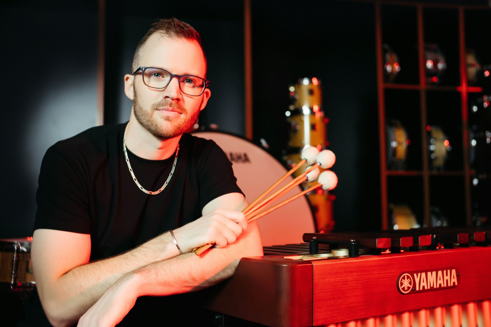

Sound Prairie Was an Idea. Now it’s Just Me.
Who I am in 10 seconds

I’m Dr. Kyle Bissantz, the current Director of Percussion Studies at the University of Nevada, Las Vegas.
This site was a modest attempt at a music publishing company from about 2015 to 2020. However, while pursuing a terminal degree and subsequent work as a rookie professor, Sound Prairie, as a company, wasn’t a feasible endeavor.
Thus, it’s now my personal website. I do sell my music and other things here, but it’s far from the original scope it once was.
Who I am in 3 minutes
Education
Dr. Kyle Bissantz is a Las Vegas-based musician since 2010. In 2015, Bissantz began a 5-year tenure as a high school band director before earning a Doctor of Musical Arts Degree from UNLV in 2023.
In 2014, Bissantz was an Artist In Residence for the Liberty Drum and Bugle Corps of Birmingham, England. This residency was a credit to the auspices of Mr. Timothy Palmer, co-founder of acclaimed percussion duo, Maraca2.
Bissantz was fortunate to have participated in the drum corps activity under the instruction of Thomas Hannum, Jeff Lee, Nick Angelis, and James Acona. Bissantz owes success in the marching arts to those above alongside Brian Howerton of UNLV and Vegas Vanguard Percussion Theatre.
This experience led Bissantz to the eventual Executive Directorship of the Vegas Vanguard Percussion Theatre, a long-established WGI/SCPA indoor percussion program. During Bissantz’s first year as director and creative designer in 2019, Vegas Vanguard earned the gold medal in A Class at the SCPA Championships in California. In 2020 the program floored its largest membership in the program’s 15-year history with 39 members. However, that year Vegas Vanguard’s season was cut short due to COVID and has since closed its doors.
In 2018, Bissantz was published as a contributing author to Professor Emertius Gary D. Cook’s enhanced fourth edition of Teaching Percussion.
In 2022, prior to completing the Doctorate, Bissantz served as an Adjunct Professor at UNLV serving the then-titled “Division of Percussion” alongside Dr.’s Timothy Jones and Dean Gronemeier. That same year Bissantz was published in Percussive Notes 60, no. 6 with “Tech Addiction and the Future Percussionist,” an article highlighting the perils of tech overuse in tandem with constant strain from percussion performance.
In 2023, Bissantz completed the doctorate and began serving as the Percussion Area’s new Coordinator and overall program director and holds this position currently as an Assistant Professor In Residence in the School of Music. Dr. Bissantz’s Doctoral Document is titled Get a Grip: An Anatomical Survey of Four-Mallet Grips for Solo, which illustrates the three primary grips’ relationship to the anatomy of the fingers, wrist, and forearm, with particular attention to the grips’ movement characteristics.
Performance
Bissantz performed regularly with the, now-defunct, Vegas Vanguard Entertainment Drumline directed by Brian Howerton. For six years, Bissantz performed weekly at major nightlife venues on the Las Vegas Strip such as Hakkasan and OMNIA nightclubs. This troupe performed for artists like Steve Aoki, The Chainsmokers, Krewlla, Tiesto, and more. Appearances at the Electric Daisy Carnival, and high profile private events were not uncommon.
Bissantz still regularly performs with the Los Angeles-based talent agency, E-Plus Productions, where Bissantz has shared the stage with the Blue Man Group, drummed while suspended from chandeliers, and atop 30-foot scaffolding. That’s Vegas for ya!
In 2014—and again in 2016—Bissantz was privileged to perform and present clinics at the Adelaide Fringe Festival and Percussive Arts Society Summer Drum Camps in Adelaide, South Australia. Similarly, Bissantz has performed and given clinics locally at the NVPAS Days of Percussion on a yearly basis.
You can hear Bissantz on three albums, Lost Vegas, Ventanas (as principal timpanist), and The Return with the highly acclaimed UNLV Wind Orchestra. Bissantz has recorded several non-credited tracks for various dance and hip-hop albums at studios around Las Vegas and regularly records percussion tracks for the KJOS Music Company.
Bissantz is a founding member of the Las Vegas Percussion Collective with duo partner Dr. Alex Stopa and colleagues Dr. Rachel Julian, and Dr. Jeremy Meronuck. The ensemble regularly serves the Las Vegas community with public performances aimed at education and exposure to the percussion art. Bissantz is fortunate to be a recurring performing artist and clinician in Chihuahua, Mexico at the Universidad Autónoma de Chihuahua’s Festival Internacional de Percusiones. In past festivals, Bissantz has had the privilege of sharing the stage with the likes of marimba virtuoso Javier Nandayapa of the historical Marimba Nandayapa family from Mexico City.
Personal
Bissantz has a strong affinity for things like Star Wars and video games. Ultimately, Bissantz derives a great deal of artistic inspiration from both of those sources, as they are two (somewhat endless) realms of incredible storytelling, musical underscoring, character development, and artistic form that genuinely informs the way Bissantz writes, performs, and teaches. There are incredible lessons one can learn about their craft through examining one that is not their own—Bissantz chooses film and games.
Bissantz is also an avid baseball fan. As former athlete both in baseball and competitive swimming, Bissantz cherishes the lessons and values that team sports instilled. Failure is the defining attribute of baseball and incremental improvement the goal of swimming. It was the physicality of swimming and mental fortitude to endure failure in baseball that prepared Bissantz for more of the musical world than Bissantz would have ever expected. For that reason, Bissantz stays connected to sports—primarily baseball—through fandom. To avoid hate mail, Bissantz’s favorite team remains a secret.
PROFESSIONAL
Bissantz proudly plays Yamaha Percussion instruments, Innovative Percussion sticks and mallets, and SABIAN Cymbals. These affiliations are more than just professional endorsements. Notwithstanding a love for their products, these companies truly support Bissantz’s work as an educator and performer, and Bissantz is immensely grateful for their support.
If you’ve made it this far… thank you.